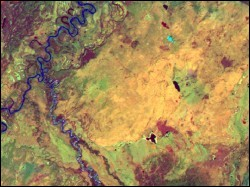
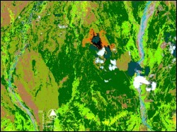

 Landsat ETM imagery of the foothill of Alaska Range was analyzed in this study and compared with the existing geological maps for the study area. The available image for the study was of winter months, when most of the area is snow covered. Snow cover hides all rock surfaces making lithological mapping of the area practically impossible. Major structural trends seem to manifest themselves over the snow cover and therefore can be studied using remote sensing images
 To enhance surface features and structural lineaments, advanced digital image processing techniques were tried out. Principal component analysis, intensity hue saturation transformation, and color composite images were generated and visually analyzed. Almost all the derived images showed the prominent east-west trending lineaments. However, a color composite image generated by coding hue from a natural color composite in red, near infrared band in green, and shortwave infrared (band 7) in blue, proved to be most optimal for highlighting the structural lineaments.
The roughly east-west lineaments trend for tens of kilometers. When compared with the geologic map, the lineations corresponded to faults and contacts, or rivers. The most interesting observation on the image was a lineament that appears to be a fault but which is shown on published geological maps as a normal contact. This lineament crosses the Nenana River and the river appears to be offset. This is the basis of interpreting the lineament as a fault rather than a normal contact. This study would benefit from investigating a summer time scene, if available. Additional use of SAR data will help to carry out structural analysis in the study area.